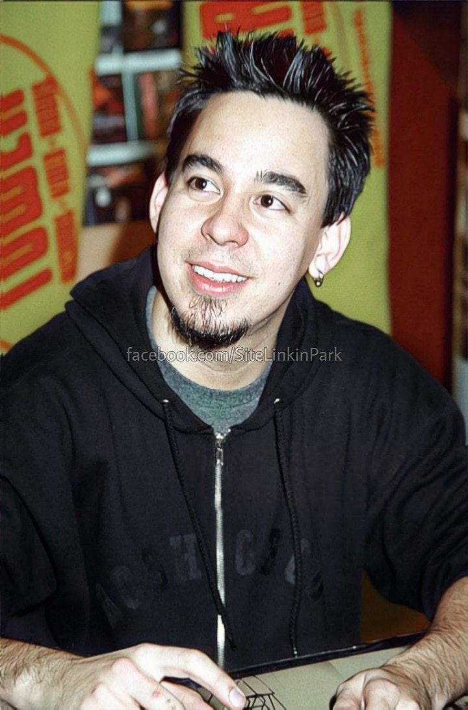
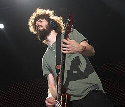
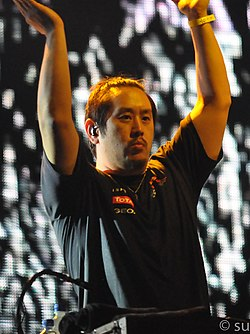
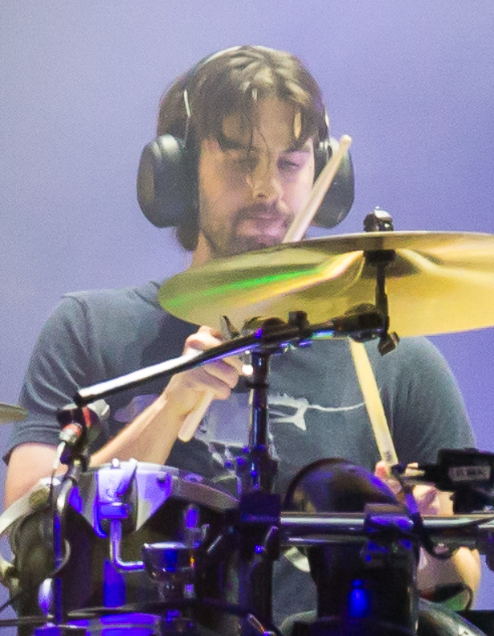

Alineación clásica
Linkin Park estuvo formado por seis integrantes durante su época más exitosa. Cada uno aportó algo especial al sonido de la banda.
Chester Bennington — Voz principal

Nació el 20 de marzo de 1976 en Phoenix, Arizona. Es considerado uno de los mejores vocalistas del rock. Su capacidad para pasar de melodías suaves a gritos poderosos era algo que muy pocos podían hacer. Se unió a la banda en 1999 y fue el rostro de Linkin Park hasta su muerte en 2017.
Mike Shinoda — Voz, rap, teclados y guitarra

Cofundador y cerebro creativo de la banda. Mike es rapero, cantante, guitarrista, pianista y productor. También estudió diseño gráfico y es artista visual. Después de la muerte de Chester, lanzó el álbum solista Post Traumatic como proceso de duelo.
Brad Delson — Guitarra

Mejor amigo de Mike Shinoda desde la preparatoria. Brad es el guitarrista principal de la banda. Su estilo combina riffs pesados con melodías más limpias. Es conocido por usar auriculares en el escenario para monitorear mejor el sonido.
Dave "Phoenix" Farrell — Bajo

Conocido como Phoenix, Dave es el bajista de la banda. Estudió música en la Universidad de Hawái. Su bajo da el peso y la base rítmica al sonido de Linkin Park.
Joe Hahn — DJ y samples

El DJ de la banda. Joe incorpora efectos electrónicos, samples y turntablism al sonido de Linkin Park. También es artista visual y director. Fue quien diseñó gran parte de la estética visual de la banda.
Rob Bourdon — Batería

El baterista de la banda desde sus inicios. Rob es el miembro más reservado del grupo. Su batería es reconocible por ser energética y muy poderosa en los conciertos.
Tabla de integrantes
| Nombre | Rol | En la banda desde |
|---|---|---|
| Chester Bennington † | Voz principal | 1999 – 2017 |
| Mike Shinoda | Voz, rap, teclados, guitarra | 1996 |
| Brad Delson | Guitarra | 1996 |
| Dave Farrell | Bajo | 1996 |
| Joe Hahn | DJ y samples | 1996 |
| Rob Bourdon | Batería | 1996 |
| Emily Armstrong | Voz principal (nueva) | 2024 |